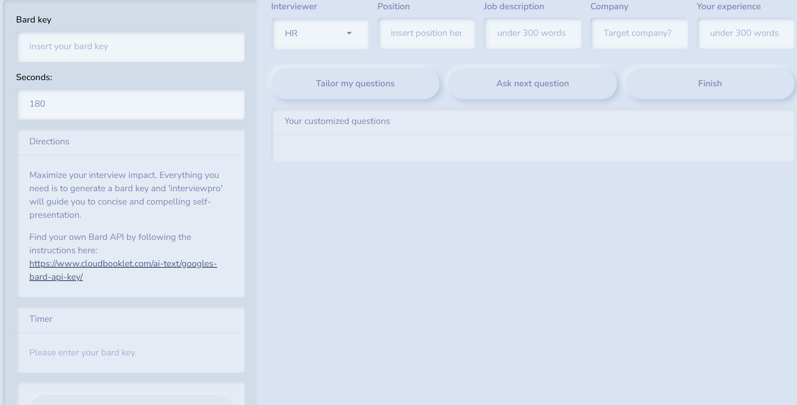

Have you ever needed a skill at a level you didn’t expect? When I was a statistics intern, I couldn’t have imagined how important soft skills would become. Now, 8 years later, as a Senior Data Scientist, it’s crystal clear to me: the most technically proficient professional who lacks communication skills will be outperformed by someone with moderate technical expertise but who can tell a compelling story and make themselves understood without boring anyone.
The Changing Landscape of Professional Tenures
The era of spending an entire career in one company is becoming a relic of the past, especially in the tech industry. Modern professionals, driven by a quest for diverse experiences and personal growth, are changing jobs more frequently than ever before. This shift is supported by data from various analyses:
According to a turnover report from Linkedin the average tenure of employees in tech companies is significantly lower than in other industries, often hovering around two to three years.
Another report highlights a growing trend among younger professionals, particularly millennials and Gen Z, who prioritize learning opportunities and workplace culture over long-term job security.
The Reality of Job Interviews
In this dynamic career landscape, job interviews have become a critical junction in a professional’s journey. However, these interviews often come with their own set of challenges:
Short Duration: Many interviews last only about 30 minutes ( I’ve seen it last 10), providing a narrow window to make a strong impression.
Nervousness: The pressure to perform well in such a limited time can heighten anxiety, affecting the interviewee’s ability to communicate effectively.
The Importance of Practice: Given these constraints, practicing for interviews becomes paramount. It’s not just about rehearsing answers but also about learning to manage nerves, articulate thoughts clearly, and demonstrate those crucial soft skills.
The Inspiration Behind the Interview Assistant App

Recognizing these challenges, I was inspired to develop an [Interview Assistant app](https://ianmuliterno.shinyapps.io/interview_assistant/), designed to help professionals navigate the interview process more effectively. The app offers a range of features aimed at enhancing interview readiness, from simulated interview scenarios to feedback mechanisms that help users improve their performance over time. All you need to do before, if you still don’t have a bard key, is checking the recommended link in the app and generating your key ( it’s for free).
How the Interview Assistant App Helps
Simulated Interviews: Users can engage in mock interviews tailored to their industry and role, helping them practice responses to common questions.
Feedback and Improvement: The app provides constructive feedback on users’ answers, highlighting areas for improvement and offering tips on showcasing soft skills.
Confidence Building: By familiarizing themselves with the interview process and improving their responses, users can approach real interviews with greater confidence and poise.
In Summary
- soft skills are as crucial as technical expertise
- job tenures become increasingly shorter, so professionals are exposed to job interviews more often
- The Interview Assistant app represents a step forward in empowering professionals to present their best selves during interviews, turning potential obstacles into opportunities for growth and success.